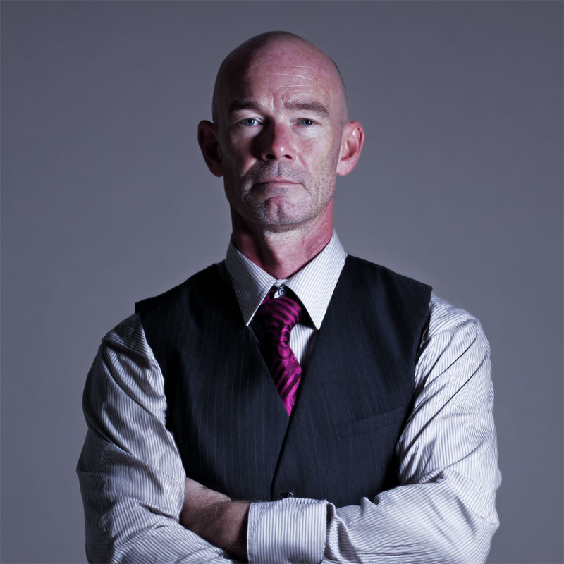

Global Enforcement. Forensic Repatriation.
When international capital flows across imaginary borders, it often attempts to hide in structural shadows. We specialize in the location, freeze, and repatriation of stolen or obscured systemic assets. We do not negotiate. We execute legal recovery frameworks with absolute precision.

Mr. Vernon built his reputation tracking sovereign debt defaults in Eastern Europe. He brings a cold, mathematical precision to international money flow, specializing in untangling shell company networks that attempt to obscure high-value assets.